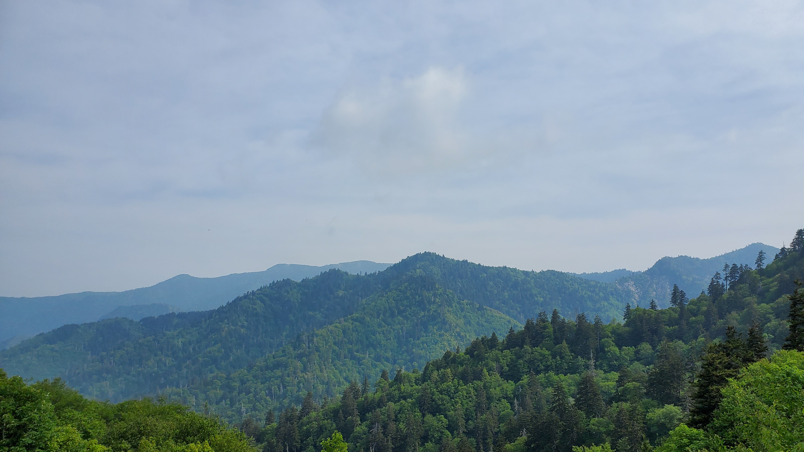
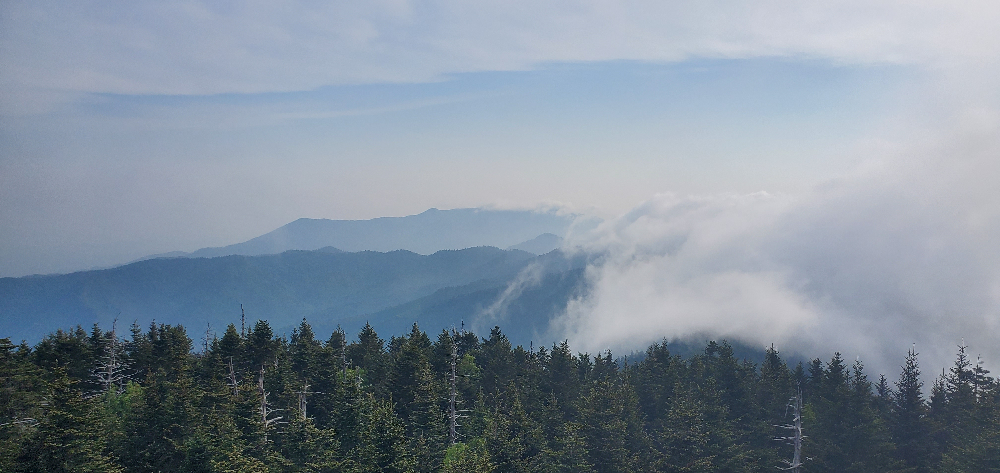

Such a cool view, the drive and walk up is also really cool. There are mutiple spots you can stop at, on the drive up the mountain. We stopped at a few, and the views are great there too. The walk was kinda *painful*, and kinda cold. I wanted to go here for like three years, I'm glad I finally did. ^w^ The elavation was like 2.025 meters, the first time my phone compass was useful lol.